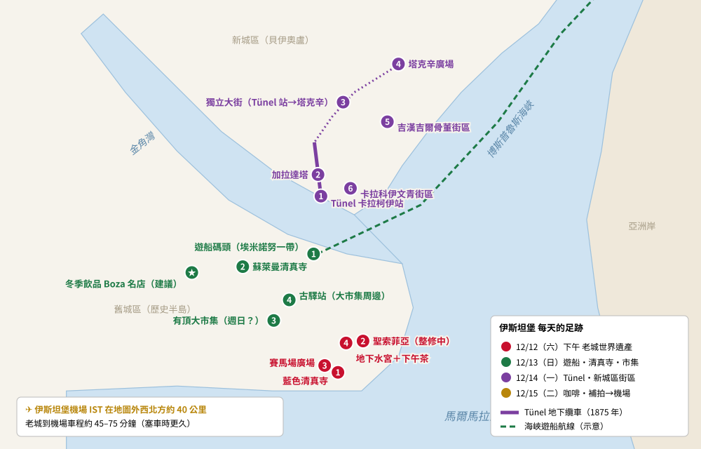

12/8二
台北出發
機上過夜
12/9三
安卡拉 LÖSEV
→卡帕多奇亞
12/10四
卡帕多奇亞
熱氣球①
12/11五
卡帕多奇亞
熱氣球②
12/12六
飛伊斯坦堡
老城遺產
12/13日
伊斯坦堡
遊船・市集
12/14一
伊斯坦堡
Tünel・街區
12/15二
咖啡・補拍
17:15 起飛
12/16三
08:45
抵台北
全程足跡

住宿（共 6 晚＋2 晚機上）
- 12/8：機上
- 12/9–12/11：卡帕多奇亞洞穴飯店 3 晚
- 12/12–12/14：伊斯坦堡飯店 3 晚
- 12/15：機上
飯店名稱雄獅會再更新
移動最累的兩天
- 12/9：紅眼航班 → 轉機 → LÖSEV 拍一整天 → 坐車 3.5–4 小時
- 12/12：一早出發往機場 → 飛伊斯坦堡 → 下午直接拍老城
三個城市的感覺
- 安卡拉：首都，政府機關多，乾冷
- 卡帕多奇亞：高原、奇岩、熱氣球，最冷
- 伊斯坦堡：大城市、海港，濕冷多雨、人多
伊斯坦堡（12/12 下午 – 12/15）

示意圖，位置約略、非實際比例。號碼＝當天建議的參觀順序。
天氣（12 月，歷年約略平均）
| 項目 | 伊斯坦堡 |
|---|
| 白天最高／清晨最低 | 約 10–11°C ／ 約 5–6°C |
| 日出／日落 | 08:19 ／ 17:36（日出很晚） |
| 天氣型態 | 濕冷、多雨、海邊風大，很少下雪 |
溫度比卡帕多奇亞高，但又濕又有風，體感很冷。雨具、防雨罩每天都要帶。
城市分區（地圖上看）
- 舊城區（歷史半島）：藍色清真寺、聖索菲亞、地下水宮、大市集、蘇萊曼清真寺都在這裡，走路可到
- 金角灣：把舊城和新城隔開，靠加拉達橋相連
- 新城區（貝伊奧盧）：加拉達塔、Tünel、獨立大街、塔克辛、吉漢吉爾、卡拉科伊
- 博斯普魯斯海峽：分開歐洲和亞洲，12/13 遊船航行這裡
每個地點要知道的事
- 藍色清真寺：禮拜時間暫停參觀，現場看告示；女性包頭巾，脫鞋
- 聖索菲亞：行程是外觀拍照，目前整修中，正好用在「世界遺產修復」
- 地下水宮：地下蓄水池，光線暗、地面濕，有梅杜莎頭像柱
- 有頂大市集：12/13 是星期日，一般週日不開，請領隊確認；裡面扒手多
- 蘇萊曼清真寺：在山丘上，可俯瞰金角灣，景色好
- 古驛站：大市集周邊的古代商旅客棧（Han），部分有屋頂可看城市
- Tünel：1875 年通車的地下纜車，只有兩站，車程約 1.5 分鐘，要用伊斯坦堡卡
- 獨立大街：步行街，有懷舊紅色電車，人潮多、扒手多
- 12/15 往機場：國際線提前 3 小時到，市區到機場 45–75 分鐘，最晚 13:30–14:00 出發
每日詳細時間表（1）
時間除了航班以外都是我的預估，以領隊當天公布為準。☀＝日出日落，紅字＝我的拍攝任務。
| 12/8（二）台北 → 伊斯坦堡機上過夜 |
| 18:30–19:00 | 抵桃園機場（請確認航廈），報到托運。備用鋰電池、行動電源一律隨身，不能托運；100Wh 以下一般可帶，100–160Wh 要航空公司同意且通常限 2 顆，超過 160Wh 不能帶（V 型電池先看標示） |
| 報到時 | 貴重攝影器材可先向海關辦理出境登記，回國時才不會被當成在國外買的 |
| 22:00 | TK25 起飛，飛行約 12 小時 50 分。上機後把手錶調成土耳其時間；電池全部充飽，盡量睡 |
| 12/9（三）伊斯坦堡 → 安卡拉 → 卡帕多奇亞最累的一天｜早餐機上・午餐病童中心・晚餐飯店 |
| 05:50 | 抵伊斯坦堡機場，在這裡入境土耳其（護照、簽證、記者證件）。照領隊指示：行李是否直掛安卡拉、器材在哪裡申報 |
| 08:00 → 09:10 | TK2126 國內線飛安卡拉（只有 1 小時 10 分） |
| 約 10:00–15:00 | LÖSEV 病童中心，含午餐。TV2 只有今天：基金會受訪、病童家庭與婦女的農業和手工藝、村莊全景、LÖSEV 商店與咖啡廳；TV1 首都扶植社會企業角度 |
| 開拍前 | 先跟基金會確認哪些人可以拍臉；未成年要家長同意；不要拍病童痛苦的特寫 |
| 約 15:00–18:30 | 車程約 300 公里、3.5–4 小時到卡帕多奇亞。☀ 日落 17:20，到的時候天已經黑。車上拍高原景色、在車上補睡 |
| 晚上 | 飯店晚餐。問領隊明早熱氣球飛不飛、幾點集合；備份素材、充電、準備保暖衣物 |
| 12/10（四）卡帕多奇亞熱氣球第 1 次機會｜早餐飯店・午餐料理教室・晚餐飯店 |
| 約 05:30–06:00 | 熱氣球接駁（如果起飛）。穿最厚的衣服、戴毛帽手套 |
| 約 06:30–07:30 | 拍充氣、火焰、地面工作人員，橫式＋直式 |
| 07:47 | ☀ 日出，升空約 1 小時。第一人稱、滿天熱氣球、記者出鏡一段（TV1、S）；訪業者：一天幾顆、票價怎麼算、停飛怎麼辦（TV3、W1） |
| 約 09:00–10:00 | 回飯店早餐 |
| 約 10:30–14:00 | 當地人家料理教室（含午餐）。做菜過程（S1）、食材從哪來、觀光收入回到農家（TV1）、受訪主人 |
| 約 14:30–16:00 | 洞穴酒窖品酒。洞穴恆溫、原生葡萄品種（台灣播出要注意酒類規範） |
| 約 16:00–17:20 | 阿瓦諾斯小鎮小吃。拍價目表、市集買氣、攤商受訪（TV3、W1） ☀ 日落 17:20 |
| 晚上 | 飯店晚餐；備份、充電；確認明早要不要補搭熱氣球 |
| 12/11（五）卡帕多奇亞熱氣球第 2 次機會・TV1 主力日｜早餐飯店・午餐當地餐廳・晚餐飯店 |
| 約 06:45–08:30 | 地面觀景點拍熱氣球（☀ 日出 07:48）。昨天沒飛的話，今天就是最後機會 |
| 約 09:00 | 飯店早餐 |
| 約 10:00–12:00 | 蘑菇岩。風化、侵蝕特寫；遊客承載量管制；保育專家受訪（TV1） |
| 約 12:30 | 當地餐廳午餐。陶罐燉肉敲罐畫面（S1） |
| 約 14:00–15:30 | 卡亞謝希爾地下城。通道、遊客數（TV1）；暗處用補光、高感光度 |
| 約 15:30–17:20 | 當地農家體驗（依季節）。小農經濟、採收（TV1） ☀ 日落 17:20 |
| 晚上 | 今天要把 TV1 的受訪補齊；打包行李（明早很早出發）、全部充電 |
吃什麼：各站在地飲食
土耳其文可以直接指給店家看。標籤＝適合用在哪一支影片。
卡帕多奇亞・安納托利亞高原（12/9–12/11）
| 中文 | 土耳其文 | 是什麼 |
|---|
| 陶罐燉肉 | Testi Kebabı | 肉和蔬菜在陶罐裡燉，上桌當面敲破陶罐，畫面最好 S1 |
| 土耳其小餃子 | Mantı | 迷你餃子，淋優格醬和辣椒奶油 S1 |
| 手擀薄餅 | Gözleme | 農家現場擀麵、鐵板煎，包起司或菠菜 TV1 |
| 船形披薩 | Pide | 長條餅皮，放絞肉、起司、蛋 |
| 白豆燉菜 | Kuru Fasulye | 家常菜，配米飯 |
| 葡萄糖漿 | Pekmez | 濃縮葡萄汁，早餐沾麵包，在地農產 |
| 杏桃乾 | Kuru Kayısı | 土耳其名產，市集常見 |
| 在地葡萄酒 | Emir／Öküzgözü／Boğazkere | 原生葡萄品種：Emir 白酒，後兩種紅酒 |
安卡拉（12/9 中午在病童中心用餐）
安卡拉的時間只有半天，午餐在 LÖSEV。可以留意基金會自己的商店、咖啡廳和手工產品，這本身就是 TV2 的社會企業素材。
飲料（全國）
| 土耳其紅茶 | Çay | 鬱金香形玻璃杯，到處都喝得到 |
| 土耳其咖啡 | Türk Kahvesi | 小杯、有咖啡渣，喝完可以「咖啡占卜」 S1 |
| 鹹優格飲 | Ayran | 配烤肉最常見 |
| 熱蘭莖奶 | Salep | 冬季限定，熱熱甜甜撒肉桂 S1 |
| 發酵小米飲 | Boza | 冬季限定，酸甜濃稠撒肉桂和鷹嘴豆 S1 |
伊斯坦堡（12/12–12/15）
| 中文 | 土耳其文 | 是什麼 |
|---|
| 土耳其早餐 | Kahvaltı | 起司、橄欖、番茄小黃瓜、蜂蜜配奶油、蛋，一大桌 L3 |
| 番茄炒蛋 | Menemen | 早餐常見，鐵鍋上桌 |
| 芝麻圈 | Simit | 街頭紅色推車賣，最便宜的早餐 W1 |
| 烤魚三明治 | Balık Ekmek | 碼頭邊的招牌小吃 S1 |
| 鑲米淡菜 | Midye Dolma | 路邊攤，擠檸檬吃（腸胃敏感的少吃） |
| 烤栗子 | Kestane | 冬天街頭的味道和畫面 |
| 旋轉烤肉 | Döner | 捲餅或夾麵包 |
| 優格烤肉 | İskender | 烤肉片、麵包、番茄醬、優格、熱奶油 |
| 土耳其薄餅 | Lahmacun | 薄餅放絞肉，捲生菜吃 |
| 果仁蜜餅 | Baklava | 多層酥皮＋開心果＋糖漿 |
| 起司甜點 | Künefe | 熱熱牽絲的起司甜點 |
| 土耳其軟糖 | Lokum | 伴手禮，市集很多 |
吃飯要知道
- 土耳其以穆斯林為主，一般餐廳沒有豬肉
- 自來水不建議直接喝，喝瓶裝水
- 餐廳多數有酒，但價格偏高
- 麵包通常免費、可續；有些餐廳另收服務費，沒收的話小費約 5–10%
- 土耳其菜偏鹹、偏油，腸胃敏感帶腸胃藥
- 拍餐廳、攤販前先問：「Çekim yapabilir miyim?」（可以拍嗎？）
- 菜單價格是新聞素材：拍下菜單和收據，記下當天匯率